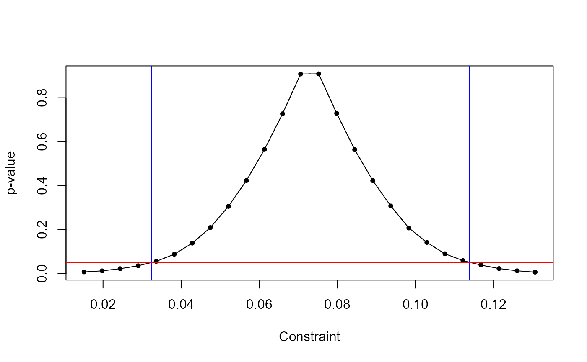

The fwildclusterboot package is an R port of STATA’s boottest package.
It implements the “fast” wild cluster bootstrap algorithm developed in Roodman et al (2019) for regression objects in R. The “fast” algorithm makes it feasible to calculate test statistics based on a large number of bootstrap draws even for large samples - as long as the number of bootstrapping clusters is not too large.
A description of the algorithm is beyond the scope of this vignette. It is very clearly presented in Roodman et al. (2019). For technical details of the implementation in fwildclusterboot, have a look at the technical vignette.
For linear regression models, fwildclusterboot supports almost all features of boottest. This means that a set of different bootstrap distributions, regression weights, fixed effects, and both restricted (WCR) and unrestricted (WCU) boostrap inference are supported. The main difference is that it currently only supports univariate hypothesis tests of regression paramters of the form \(H_{0}: \beta_{k} = \beta_{k}^{0}\) vs \(H_{1}: \beta_{k} \neq \beta_{k}^{0}\).
In contrast to boottest, fwildclusterboot does not support methods for instrumental variable estimation and the score bootstrap for non-linear models.
boottest() functionThe fwildclusterboot package consists of one key function, boottest(). It implements the fast wild bootstrap and works with regression objects of type lm, felm and fixest from base R and the lfe and fixest packages.
To start, we create a random data set with two cluster variables (group_id1 & group_id2), two fixed effects and a set of covariates. The icc_ arguments control the cluster variable’s intra-cluster correlation.
# load data set voters included in fwildclusterboot
data(voters)
# estimate the regression model via lm
lm_fit <- lm(proposition_vote ~ treatment + ideology1 + log_income + Q1_immigration , data = voters)
# model with interaction
lm_fit_interact <- lm(proposition_vote ~ treatment + ideology1 + log_income:Q1_immigration , data = voters)
if(requireNamespace("fixest")){
library(fixest)
# estimate the regression model via feols
feols_fit <- feols(proposition_vote ~ treatment + ideology1 + log_income + Q1_immigration , data = voters)
}
if(requireNamespace("lfe")){
library(lfe)
# estimate the regression model via felm
felm_fit <- felm(proposition_vote ~ treatment + ideology1 + log_income + Q1_immigration , data = voters)
}The boottest() function has 4 required and several optional arguments. The required objects are
lm, fixest or felm
# boottest on an object of type lm
boot_lm <- boottest(lm_fit, clustid = "group_id1", param = "treatment", B = 9999)
if(requireNamespace("fixest")){
# boottest on an object of type fixest
boot_feols <- boottest(feols_fit, clustid = "group_id1", param = "treatment", B = 9999)
}
if(requireNamespace("lfe")){
# boottest on an object of type felm
boot_felm <- boottest(felm_fit, clustid = "group_id1", param = "treatment", B = 9999)
}To tests for an interaction, it is important to use the coefficient names that are internally created by the modeling function.
names(coef(lm_fit_interact))
#> [1] "(Intercept)" "treatment"
#> [3] "ideology1" "log_income:Q1_immigration1"
#> [5] "log_income:Q1_immigration2" "log_income:Q1_immigration3"
#> [7] "log_income:Q1_immigration4" "log_income:Q1_immigration5"
#> [9] "log_income:Q1_immigration6" "log_income:Q1_immigration7"
#> [11] "log_income:Q1_immigration8" "log_income:Q1_immigration9"
#> [13] "log_income:Q1_immigration10"
boot_lm_interact <- boottest(lm_fit_interact, clustid = "group_id1", param = "log_income:Q1_immigration1", B = 9999)To access the estimation results, boottest() comes with summary(), tidy() and glance() methods. The tidy() method returns the estimation results in a data.frame. summary() returns additional information on top of the test statistics reported by tidy(). Theglance() method enables the use of output formatting tools from the modelsummary package.
# fwildclusterboot's internal summary() method
summary(boot_lm)
#> boottest.lm(object = lm_fit, clustid = "group_id1", param = "treatment",
#> B = 9999)
#>
#> Observations: 300
#> Bootstr. Iter: 9999
#> Bootstr. Type: rademacher
#> Clustering: 1-way
#> Confidence Sets: 95%
#> Number of Clusters: 40
#>
#> term estimate statistic p.value conf.low conf.high
#> 1 treatment 0.073 3.786 0.001 0.033 0.112
if(requireNamespace("modelsummary")){
# summary via the modelsummary package
library(modelsummary)
msummary(list(boot_lm, boot_lm_interact),
estimate = "{estimate} ({p.value})",
statistic = "[{conf.low}, {conf.high}]")
}
#> Loading required namespace: modelsummary| Model 1 | Model 2 | |
|---|---|---|
| treatment | 0.073 (0.001) | |
| [0.033, 0.112] | ||
| log_income × Q1_immigration1 | -0.038 (0.001) | |
| [-0.056, -0.019] | ||
| Num.Obs. | 300 | 300 |
| R2 | 0.316 | 0.339 |
| R2 Adj. | 0.288 | 0.311 |
| AIC | -82.1 | -92.2 |
| BIC | -30.2 | -40.4 |
| Log.Lik. | 55.025 | 60.102 |
A plot() method allows the user to inspect the bootstrap t-statistics:
plot(boot_lm)
The boottest() function supports clustering of any dimension. E.g. for two-way clustering, one simply needs to specify the names of the cluster variables in a character vector.
boot_lm <- boottest(lm_fit, clustid = c("group_id1", "group_id2"), param = "treatment", B = 9999)
summary(boot_lm)
#> boottest.lm(object = lm_fit, clustid = c("group_id1", "group_id2"),
#> param = "treatment", B = 9999)
#>
#> Observations: 300
#> Bootstr. Iter: 9999
#> Bootstr. Type: rademacher
#> Clustering: 2-way
#> Confidence Sets: 95%
#> Number of Clusters: 40 20 251
#>
#> term estimate statistic p.value conf.low conf.high
#> 1 treatment 0.073 3.925 0.005 0.03 0.116Furthermore, the user can choose among four different weighting distribution via the type argument: Rademacher, Mammen, Normal and Webb. By default, boottest() uses the Rademacher distribution.
boot_lm_rade <- boottest(lm_fit,
clustid = c("group_id1", "group_id2"),
param = "treatment",
B = 999,
type = "rademacher")
boot_lm_webb <- boottest(lm_fit,
clustid = c("group_id1", "group_id2"),
param = "treatment",
B = 999,
type = "webb")
if(requireNamespace("modelsummary")){
library(modelsummary)
msummary(list(boot_lm_rade, boot_lm_webb),
estimate = "{estimate} ({p.value})",
statistic = "[{conf.low}, {conf.high}]")
}| Model 1 | Model 2 | |
|---|---|---|
| treatment | 0.073 (0.007) | 0.073 (0.003) |
| [0.027, 0.116] | [0.028, 0.117] | |
| Num.Obs. | 300 | 300 |
| R2 | 0.316 | 0.316 |
| R2 Adj. | 0.288 | 0.288 |
| AIC | -82.1 | -82.1 |
| BIC | -30.2 | -30.2 |
| Log.Lik. | 55.025 | 55.025 |
Via the function argument sign_level, the user can control the significance level of the test. The default value is sign_level = 0.05, which corresponds to a 95% confindence interval.
boot_lm_5 <- boottest(lm_fit,
clustid = c("group_id1"),
param = "treatment", B = 9999,
sign_level = 0.05)
boot_lm_10 <- boottest(lm_fit,
clustid = c("group_id1"),
param = "treatment", B = 9999,
sign_level = 0.10)
if(requireNamespace("modelsummary")){
library(modelsummary)
msummary(list(boot_lm_5, boot_lm_10),
estimate = "{estimate} ({p.value})",
statistic = "[{conf.low}, {conf.high}]")
}| Model 1 | Model 2 | |
|---|---|---|
| treatment | 0.073 (0.001) | 0.073 (0.001) |
| [0.033, 0.112] | [0.040, 0.106] | |
| Num.Obs. | 300 | 300 |
| R2 | 0.316 | 0.316 |
| R2 Adj. | 0.288 | 0.288 |
| AIC | -82.1 | -82.1 |
| BIC | -30.2 | -30.2 |
| Log.Lik. | 55.025 | 55.025 |
In the case of multiway clustering, the user might want to specify the bootstrap clustering level. By default, boottest chooses the clustering level with the highest number of clusters as bootcluster = "max". Other choices are the minimum cluster, or independent clustering variables.
boot_lm1 <- boottest(lm_fit,
clustid = c("group_id1", "group_id2"),
param = "treatment",
B = 9999,
bootcluster = "min")
boot_lm2 <- boottest(lm_fit,
clustid = c("group_id1", "group_id2"),
param = "treatment",
B = 9999,
bootcluster = "group_id1")
if(requireNamespace("modelsummary")){
library(modelsummary)
msummary(list(boot_lm1, boot_lm2),
estimate = "{estimate} ({p.value})",
statistic = "[{conf.low}, {conf.high}]")
}| Model 1 | Model 2 | |
|---|---|---|
| treatment | 0.073 (0.005) | 0.073 (0.010) |
| [0.032, 0.111] | [0.029, 0.116] | |
| Num.Obs. | 300 | 300 |
| R2 | 0.316 | 0.316 |
| R2 Adj. | 0.288 | 0.288 |
| AIC | -82.1 | -82.1 |
| BIC | -30.2 | -30.2 |
| Log.Lik. | 55.025 | 55.025 |
Last, boottest() supports out-projection of fixed effects in the estimation stage via lfe::felm() and fixest::feols(). Within the bootstrap, the user can choose to project out only one fixed effect, which can be set via the fe function argument. All other fixed effects specified in either felm() or feols() are treated as sets of binary regressors.
if(requireNamespace("fixest")){
# estimate the regression model via feols
feols_fit <- feols(proposition_vote ~ treatment + ideology1 + log_income | Q1_immigration , data = voters)
boot_feols <- boottest(feols_fit,
clustid = "group_id1",
param = "treatment",
B = 9999,
fe = "Q1_immigration")
}
if(requireNamespace("lfe")){
# estimate the regression model via felm
felm_fit <- felm(proposition_vote ~ treatment + ideology1 + log_income | Q1_immigration , data = voters)
boot_felm <- boottest(felm_fit,
clustid = "group_id1",
param = "treatment",
B = 9999,
fe = "Q1_immigration")
}In the case of few treated clusters, MacKinnon and Webb (2018) suggest to use subclusters to form the bootstrap distribution. boottest() allows the user to specify subclusters via the bootcluster argument.
boot_min <- boottest(lm_fit,
clustid = c("group_id1", "group_id2"),
param = "treatment",
B = 9999,
bootcluster = "min")
boot_var <- boottest(lm_fit,
clustid = c("group_id1", "group_id2"),
param = "treatment",
B = 9999,
bootcluster = "group_id1")
boot_2var <- boottest(lm_fit,
clustid = c("group_id1", "group_id2"),
param = "treatment",
B = 9999,
bootcluster = c("group_id1", "Q1_immigration"))
if(requireNamespace("modelsummary")){
library(modelsummary)
msummary(model = list(boot_min, boot_2var),
estimate = "{estimate} ({p.value})",
statistic = "[{conf.low}, {conf.high}]")
}| Model 1 | Model 2 | |
|---|---|---|
| treatment | 0.073 (0.005) | 0.073 (0.009) |
| [0.032, 0.111] | [0.028, 0.117] | |
| Num.Obs. | 300 | 300 |
| R2 | 0.316 | 0.316 |
| R2 Adj. | 0.288 | 0.288 |
| AIC | -82.1 | -82.1 |
| BIC | -30.2 | -30.2 |
| Log.Lik. | 55.025 | 55.025 |
If regression weights are specified in the estimation stage via lm(), feols() or felm(), boottest() incorporates the weights into the bootstrap inference:
A major bottleneck for the performance of boottest() is a large matrix multiplication, which includes the bootstrap weights matrix on the right. In order to speed up the computation, this multiplication calls the c++ Eigen library, which allows for parallelization of dense matrix products. By default, boottest() uses one thread. Note that there is a cost of parallelization due to communication overhead. As a rule of thumb, if boottest() takes more than 10 seconds per execution, using a second thread might speed up the bootstrap.
The number of threads can be specified via the nthreads argument of boottest():
boot_feols <- boottest(lm_fit,
clustid = "group_id1",
param = "treatment",
B = 9999,
nthreads = 2)boottest() applies the small-sample correction \(N_{g} / (N_{g} - 1)\), where \(N_g\) is the dimension of cluster g.
In case of multi-way clustering, it is not guaranteed that the covariance matrix is positive definite, in which case the resulting bootstrap test statistics are invalid. boottest() follows the implementation in STATA and deletes invalid tests statistics, and informs the user with a note.
boottest() retrieves both the design matrix \(X\), the dependent variable \(y\) and the cluster variables from the input object of type lm, fixest or felm. Because boottest() allows to add or delete clustering variables that are not employed in lm(), feols() and felm(), it may occur that a cluster variable is added in boottest() that is not included in the regression model, either as a cluster variable or covariate.
In this case, boottest by default deletes the respective rows in the dependent variable, design matrix and in the cluster variables. In consequence, estimation (in the modeling step) and inference (via boottest()) are done on a different sample. boottest() returns a warning.
This in turn has a consequence for the use of boottest() and modelsummary. boottest() simply calls the glance() methods for objects of types fixest, felm and lm from the broom package, and therefore, the number of observations reported via msummary() is the number of observations used in the modeling stage.
The default behavior of boottest() - to delete missings with a warning - can be set off via the na_omit function argument. If na_omit is set to FALSE, boottest() will not allow for missing values in the added cluster variables and throw an error.
The feols() function from fixest introduces several useful formula shortcuts. E.g. one can fit several regressions at once. All these advanced formula tools are not supported in boottest(). boottest() tries to catch any use of advanced formulas, but might fail to return errors in some cases.